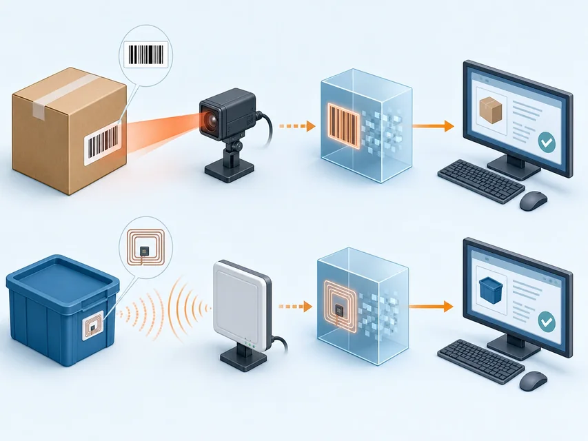
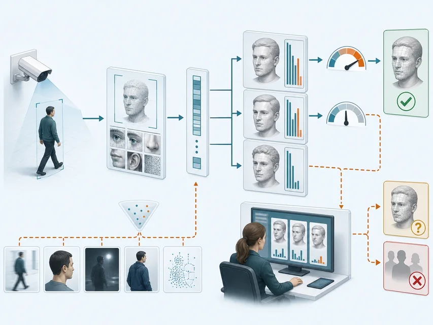

唯一性
在规定语境中区分对象或对象类别
让系统知道数据属于哪个对象
 VER. 2608
Built with impress.js
VER. 2608
Built with impress.js
学完后，你应能说明共享车辆各类 ID 由谁读取、如何绑定和何时停用
编号只有进入语境，才能支持追踪、管理和交互
标：目标对象 → 标记与分配 识：识别者在语境中读取／解析 → 对象的标识结果
设备、实体物、人或一类等价物
读取、观察或推断对象标识的设备与系统
设计、分配和呈现编码序列或符号
通过媒介、协议或模型解析出对象的标识
标识的作用是把数据绑定到正确对象和语境，而不是制造孤立编号
唯一不等于安全，标识也不等于认证或授权
在规定语境中区分对象或对象类别
防止未授权增加、篡改或删除
控制身份信息的暴露、关联和追踪
遵循格式、分配和解析规则
同一编号在哪个系统内唯一、谁能读取、有效到何时，以及是否会暴露轨迹，都要逐项说明
| 信息 | 填写判断 | 填写证据 |
|---|---|---|
| 设备序列号 | 填写 | 填写 |
| 同型号商品条码 | 填写 | 填写 |
| 传感器读数 | 填写 | 填写 |
| 人脸特征向量 | 填写 | 填写 |
判断标识要问它区分谁、在哪个语境中、由谁读取和如何保护
关键差异是对象按约定呈现编码，还是识别者从特征推断标识
对象按约定呈现或返回编码
识别者按规则读取、解码和校验
条码、射频识别 RFID 是常见例子
对象不直接提供编码，识别者从特征推断标识
人脸、车牌是常见例子
先看交互关系，再选择编码读取还是特征推断
两者都要写明谁能读取、结果错了怎样复核，以及记录会不会暴露身份或轨迹
| 维度 | 合作式识别 | 非合作式识别 |
|---|---|---|
| 证据来源 | 编码、协议和返回数据 | 图像、字符、生物特征或行为 |
| 技术基础 | 编码、解码、检错与纠错 | 特征工程、数据集与模型匹配 |
| 常见失败或影响 | 标签复制、读取冲突、越权读取 | 误识、拒识、群体偏差和隐私暴露 |
| 复核方式 | 校验码、协议与人工抽查 | 阈值、置信度与人工复核 |
识别结果要结合证据和不确定性；认证、授权另行判断
| 场景 | 填写识别关系 | 填写依据 |
|---|---|---|
| 手机扫描商品码 | 填写 | 填写 |
| 阅读器批量读取标签 | 填写 | 填写 |
| 摄像头识别车牌 | 填写 | 填写 |
| 门禁摄像头识别人脸 | 填写 | 填写 |
一维／二维条码按信息组织区分；RFID 依靠射频交互
上方：条码（编码 → 图案 → 光学获取 → 解码／应用） 下方：RFID（阅读器 → 射频交互 → 标签 → 返回标识）
上方条码光学链：一维沿一个方向组织条／空；二维在两个方向组织模块，容量通常更高，部分制式支持纠错；条码需可见、可对准。下方是 RFID 射频链

编码结构和读取条件共同决定结果
按条码制式设计数据符、定界结构和校验或纠错信息
把标识编码成可印刷或显示的图案
用光学或摄像头获取条码图案
定位条、空或模块并解码；应用再把编码映射到对象
静区、方向、光照、污损和纠错都会影响条码识别
| 现象 | 填写检查项 | 填写证据 |
|---|---|---|
| 手机无法定位图案 | 填写 | 填写 |
| 扫描结果方向错误 | 填写 | 填写 |
| 条码局部污损仍可读 | 填写 | 填写 |
| 读出编码但找不到商品 | 填写 | 填写 |
先查图案，再查解码和应用映射
阅读器、天线和标签形成一条能量与数据路径
下行：阅读器 → 天线 → 供能／查询 → 标签 上行：标签 → 天线 → 返回标识 → 阅读器解析
发送查询和射频能量，接收标签响应
把导行波与空间电磁波相互转换
保存标识数据，按类型获得工作能量并返回数据
非接触和批量读取仍需防冲突、环境与权限控制
还要检查读取距离、金属或液体干扰、批量冲突、访问权限和注销
从阅读器射频场获得工作能量
结构简单，依赖读取环境
自带电源，通常通信距离更大
需要管理电池和生命周期
电池供内部工作，通信能量仍来自外部射频
在能量与距离之间折中
阅读器即使收到标签 ID，仍要检查设备身份和访问权限，并记录谁在何时读取
| 现象 | 填写治理项 | 填写证据 |
|---|---|---|
| 多个标签同时响应 | 填写 | 填写 |
| 金属环境读写不稳 | 填写 | 填写 |
| 标签可被未授权读取 | 填写 | 填写 |
| 旧标签仍可进入系统 | 填写 | 填写 |
RFID 系统要同时治理射频环境、标签身份和使用权限
对象不必呈现编码；识别结果仍有不确定性
原始数据 → 目标区域／预处理 → 特征表示 与登记数据或模型匹配 → 身份候选＋置信度 → 接受、拒绝或人工复核
目标区域是图像内区域，不是地理定位；候选／置信度不等于认证或授权，按阈值和风险决定复核

规则要写明接受阈值、拒识怎样重试、谁复核误识，以及当事人怎样申诉
01
02
03
04
05获取图像或信号
→ 提取特征表示
→ 检索或模型匹配
→ 输出身份候选与置信度
→ 接受、拒绝或人工复核模型输出候选和置信度；人复核将用于拒绝进入或处罚的结果，系统限制图像访问并保留更正或申诉入口
| 结果 | 填写后续动作 | 填写证据 |
|---|---|---|
| 车牌识别得到某车辆候选 | 填写 | 填写 |
| 人脸匹配得到某账户候选 | 填写 | 填写 |
| 光学字符识别 OCR 读出快递单号 | 填写 | 填写 |
| 未找到匹配特征 | 填写 | 填写 |
OCR 结果可先进入物流查询；人脸或车牌结果若要触发拒绝进入、处罚等动作，应增加复核和申诉
不同主体使用不同标识，后端要维护映射和生命周期
| 主体 | 可能使用的标识 | 关注问题 |
|---|---|---|
| 用户 | 二维码或短编号 | 易读、授权和防冒用 |
| 设备 | 蓝牙地址、设备序列 | 通信、绑定和替换 |
| 平台 | 平台内部 ID、数据库主键 | 关联、审计和生命周期 |
| 维护人员 | 可见编号或标签 | 快速发现、调度和维修 |
多标识系统必须维护“哪些标识属于同一个物”的对应关系，并写清平台内部 ID 的有效范围
每个 ID 都要写明对应哪辆车、谁能读、换件时怎样改绑、停用后怎样拒绝旧 ID
01
02对象／使用者 → 编码读取或特征推断 → 多标识绑定
权限／使用／更新／注销 → 准确性／隐私／审计／责任验收识别谁、谁读取、谁被追踪
光／电／射频／声音；采集与匹配条件
规定标识绑定、转移、更新与注销
核对准确性、隐私、权限、审计与责任
分配 ID → 绑定车辆 → 授权读取 → 换件改绑 → 停用注销 → 从日志追查
| 标识 | 填写主要使用者 | 填写维护关系 |
|---|---|---|
| 用户可见二维码 | 填写 | 填写 |
| 设备通信地址 | 填写 | 填写 |
| 维护编号 | 填写 | 填写 |
| 平台内部 ID | 填写 | 填写 |
用户扫二维码，设备用通信地址，维修人员查维护号，平台用内部 ID 关联订单和日志
为四类主体写出可绑定、可停用的标识方案